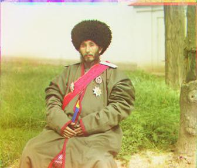
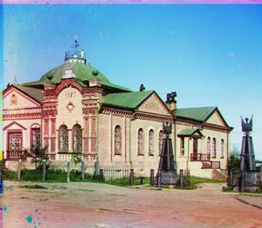
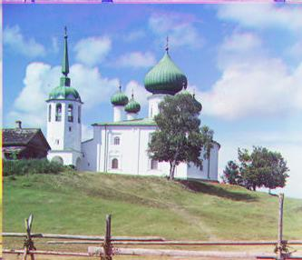
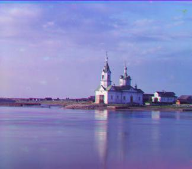
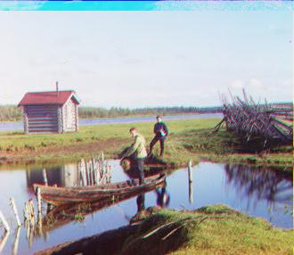
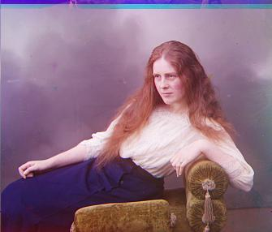
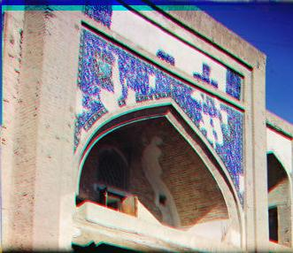

TP1: Colourizing the Image
The Prokudin-Gorskii photo collection
Par Pier-Luc Auger
GIF-4105/7105 Photographie Algorithmique by Jean-François Lalonde
1-Project Details Section
2-Approach Section
3-Result Section
4-Bells and Whistles Section
The goal of this project is to take the digitized Prokudin-Gorskii glass plate images as input, and automatically produce a colour image with as few visual artefacts as possible as output. In order to do this, we needed to extract the three colour channel images. We assume the negatives are evenly divided into three plates (i.e. each plate is in exactly 1/3 of the negatives). To align R, G, B images well, the first important things is to find what is the property which is different between channels, there are different assumptions we can use to solve this problem for instance, SSD,NCC( Normalized Cross-Correlation ). In this project, We used the image matching algorithm based on L2 norm distance or so called Sum of Squared Differences which compute the SSD between two images and return offset value and then we can place channels on top of each-others base of the offsets and align them so that they form a single RGB colour image.
We first cropped the R,G,B images evenly to get better data to align since the border added unwanted noise to the channels, We exactly used same function that We exploited for the final image`s enhancement which will be described in Bells and Whistles Section in detail. The program can be done in two ways:
- Low resolution images
- High resolution images
Both methods use roughly same basis strategy just their performances is different. To handle high resolution images in order to speed up the alignment we use image pyramids, we take the original image and recursively resized it by 50% then run SSD on the lowest resolution image to get the offset, and then translate that offset to the next larger resolution, it could be as initial guess in the finer scale. You only need to search in coarsest scale to do fine adjustment.
You can find the result as following which will be elaborated in next section.

Red Offset : x=9, x=-1
Green Offset : x=4, x=1

Red Offset : x=5, x=5
Green Offset : x=2, x=3

Red Offset : x=12, x=0
Green Offset : x=6, x=1

Red Offset : x=4, x=3
Green Offset : x=2, x=2

Red Offset : x=6, x=0
Green Offset : x=2, x=0

Red Offset : x=12, x=-1
Green Offset : x=1, x=-1

Red Offset : x=4, x=2
Green Offset : x=1, x=1

Red Offset : x=11, x=1
Green Offset : x=5, x=1

Red Offset : x=12, x=3
Green Offset : x=6, x=2

Red Offset : x=91, x=33
Green Offset : x=39, x=15,

Red Offset : x=107, x=55
Green Offset : x=47, x=38,

Red Offset : x=9, x=-1
Green Offset : x=4, x=1,

Red Offset : x=51, x=38
Green Offset : x=35, x=25,

Red Offset : x=87, x=32
Green Offset : x=42, x=5,

Red Offset : x=49, x=14
Green Offset : x=14, x=6,

Red Offset : x=-99, x=64
Green Offset : x=2, x=3,

Red Offset : x=125, x=33
Green Offset : x=57, x=25,

Red Offset : x=12, x=0
Green Offset : x=6, x=1,

Red Offset : x=4, x=3
Green Offset : x=2, x=2,

Red Offset : x=42, x=4
Green Offset : x=16, x=2,

Red Offset : x=6, x=0
Green Offset : x=2, x=0,

Red Offset : x=13, x=-1
Green Offset : x=1, x=-1,

Red Offset : x=-32, x=1
Green Offset : x=1, x=1,

Red Offset : x=11, x=17
Green Offset : x=-16, x=10,

Red Offset : x=71, x=33
Green Offset : x=24, x=20,

Red Offset : x=11, x=1
Green Offset : x=5, x=1,

Red Offset : x=14, x=4
Green Offset : x=6, x=2,